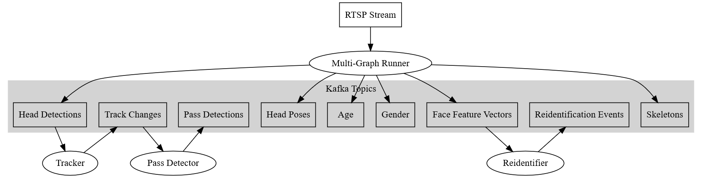

Architecture
UVAP implements a dataflow programming model. This way data is processed by multiple simple processors (potentially running on different hosts) connected by channels. This model is widely used in the video processing domain, for example in ffmpeg or gstreamer. UVAP uses Apache Kafka® for data channels and Docker to run the processors. These technologies provide a generic and flexible framework to build various stream processing applications.
The term microservice is used hereafter for processors. The main use case of UVAP is real-time video analysis, where all microservices run continuously, processing potentially never ending data. A microservice can take zero or more Kafka topics as input, and produce zero or more Kafka topics as output. In Kafka terminology, they are consumers, producers or stream processors. Microservices are packaged and run in Docker containers. Microservices typically process data in real-time, however it is possible to run them on historical data.
The data channels between microservices are Kafka Topics. Head of the topics are kept in a persistent storage for configurable time or size. For example, the user can configure to keep the last two weeks of video data and keep all object detentions for a year.

Dataflow Architecture of UVAP
Rectangles are data channels, ellipses are processing units.
Note:
Node labels in this figure are not technical names. Actual topic names can be listed with UVAP helper scripts.
Multi-Graph Runner
Multi-Graph Runner (MGR) runs all deep-learning-based image processing models (for example, head detection or face recognition) on the video streams. MGR outputs only lightweight data, such as head detection streams or face recognition feature vectors. The uncompressed video data is never transferred over Kafka, as it is only used to exchange lightweight data. All low-level image processing is done inside MGR.
For further information, see the following topics:
- Multi-Graph Runner microservice description
- Configuring Multi-Graph Runner
- Starting Multi-Graph Runner
Tracker
Tracker microservice uses the Head Detections topic produced by
MGR and produces the Track Changes topic. A track is a sequence of head
detections of an individual on a video stream from the first detection to the
disappearance. Besides the path of movement, a track can help to calculate how
long an individual stays in an area of interest.
Tracker is a key feature for using Pass Detector.
For further information, see the following topics:
Pass Detector
Pass Detector microservice uses Track Changes topic produced by the
Tracker microservice and produces the Pass Detections topic. If one or
more directed polylines (pass lines) are specified in the microservice
configuration, the service detects and produces records whenever a track
intersects a pass line. Pass Detector helps to detect if an individual enters
or leaves an area of interest, for example; the queue area in a store.
For further information, see the following topics:
Reidentifier
Reidentifier microservice uses Face Feature Vectors topics
produced by MGR and produces Reidentification Events topic. An individual can
be registered at the first appearance on a camera stream and can be reidentified
later, even on a different camera stream. This can be very helpful at waiting
time estimation.
For further information, see the following topics: